The snow leopard is a species of large cat in the genus Panthera of the family Felidae. Snow leopards have evolved to live in some of the harshest conditions on Earth. Their thick white-gray coat spotted with large black rosettes helps them blend in perfectly with mountains enviroments.
IUCN VU status: Vulnerable
Population: 4,000-7,000
Diet: Carnivore
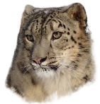
Weight: 60 to 120 pounds
Size: four to five feet with a tail up to 36 inches
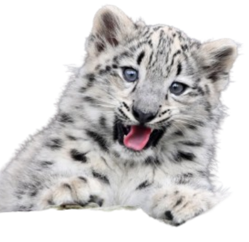
Lifespan: 10 to 13 years in the wild, 22 years in zoos
Snow leopard abilities
The snow leopard’s powerful build allows it to scale great steep slopes with ease. Its hind legs give the snow leopard the ability to leap six times the length of its body (about 50 feet). A long tail enables agility, provides balance and wraps around the resting snow leopard as protection from the cold.
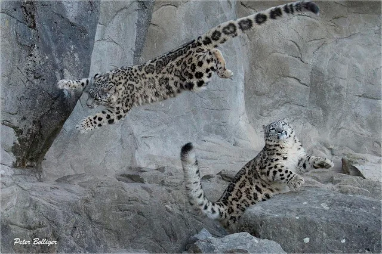
Relation to other species
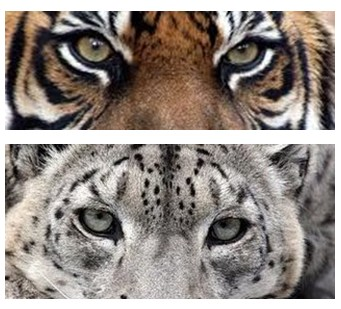
Despite being called the snow 'leopard', this big cat is more closely related to the tiger than the leopard.
Where are they found?
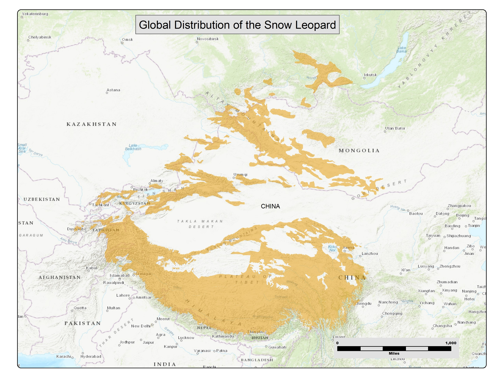
Snow leopards are found in the high mountains of Central and South Asia, including the Himalayas, Tibetan Plateau, and southern Siberia. They live in 12 countries, including Afghanistan, Bhutan, China, India, Kazakhstan, Kyrgyzstan, Mongolia, Nepal, Pakistan, Russia, Tajikistan, and Uzbekistan.
Predators
Snow leopards have no natrual predators. However, human poaching; habitat loss; and climate change pose a significant threat to snow leopards. Rising global temperatures can severely impact alpine habitat productivity which in turn can impact prey and freshwater availability in the harsh mountainous environment.
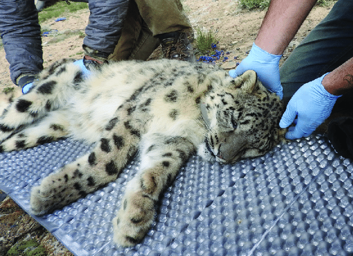
Diet and hunting
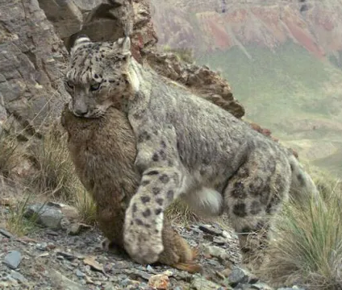
Snow leopards hunt lots of prey, but they favor herbivores. The Himalayan blue sheep is a meal that can sustain a snow leopard for up to two weeks. Snow leopards typically hunt at dusk and dawn. Snow leopards are not aggressive towards humans: there has never been a verified snow leopard attack on a person.
Species importance
Snow leopards are a keystone species, they keep a control on the population of herbivores and remove the unhealthy animals from its habitat. Snow leopards are also an indicator of the health of their high-altitude habitat as all trophic levels under snow leopards must be healthy in order to provide prey.
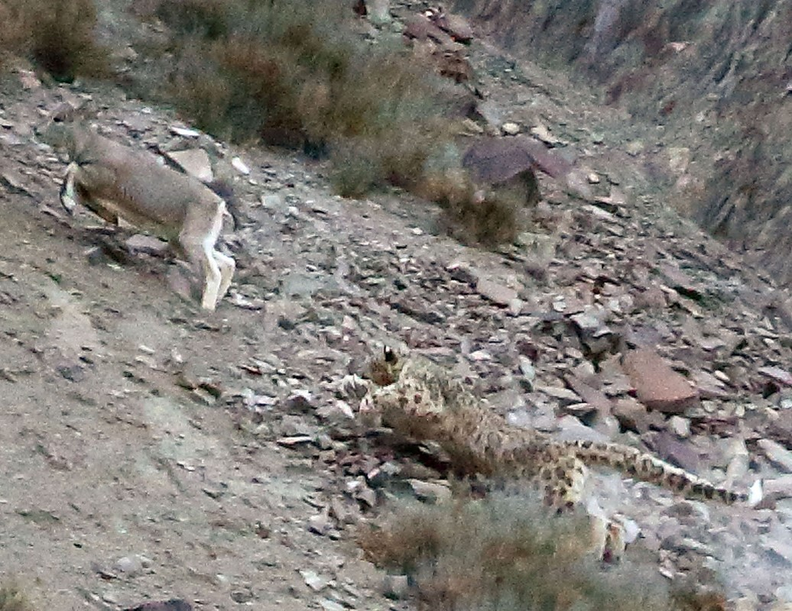
Gestation period, mating, and young
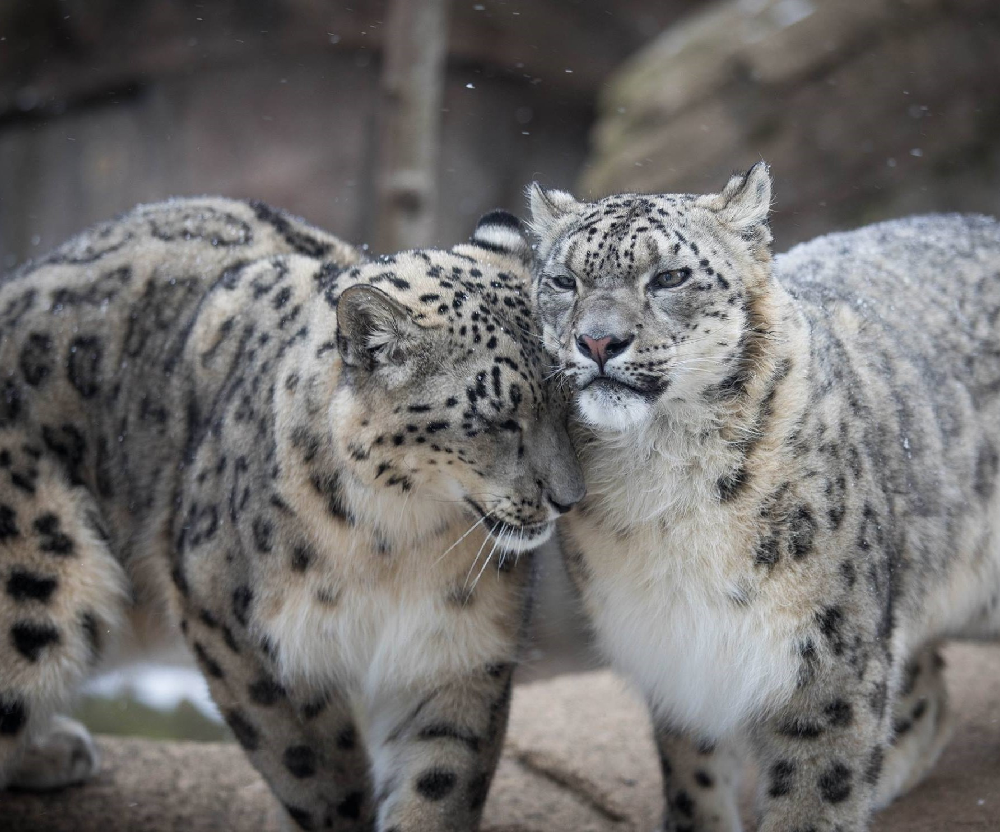
Snow Leopards come together to breed from January to March, and the male will stay with the female for a week before leaving. Snow leopards have a gestation period of about 93 -110 days, litter size ranges from 1 to 5 (but usually 2 to 3). Cubs will stay with mom for 18 to 22 months. The Snow leopard is a K selected species type, meaning it cares for it's young and has a small ammount of babies.
Conservation Status
The International Union for Conservation of Nature (IUCN) lists the snow leopard as Vulnerable. The global population is estimated to number fewer than 10,000 mature individuals. Poaching and hunting is a major reason for this, along with climate change and habitat loss. Snow leopards require a large ammount of land to roam in the wild. They also require a healthy habitat and enviroment to help them blend into the snowy and rocky enviroment allowing them to hunt.
How can you help?
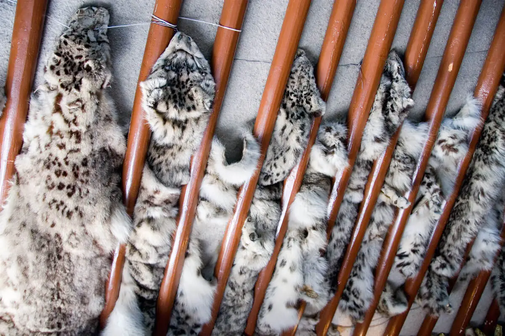
Understand snow leopards are a vulnerable keystone species, and thus must be protected. Do not support the poaching of snow leopards and do not buy snow leopard pelts. It is illegal to sell snow leopard parts anywhere in the world. In the United States, attempting to import a snow leopard pelt can result in a fine of up to $25,000.
Donating to trusted charities and non-profit organizations can be a good way to support snow leopards. The Snow Leopard Trust in Seattle, Washington helps protect the endangered snow leopard and its habitat.
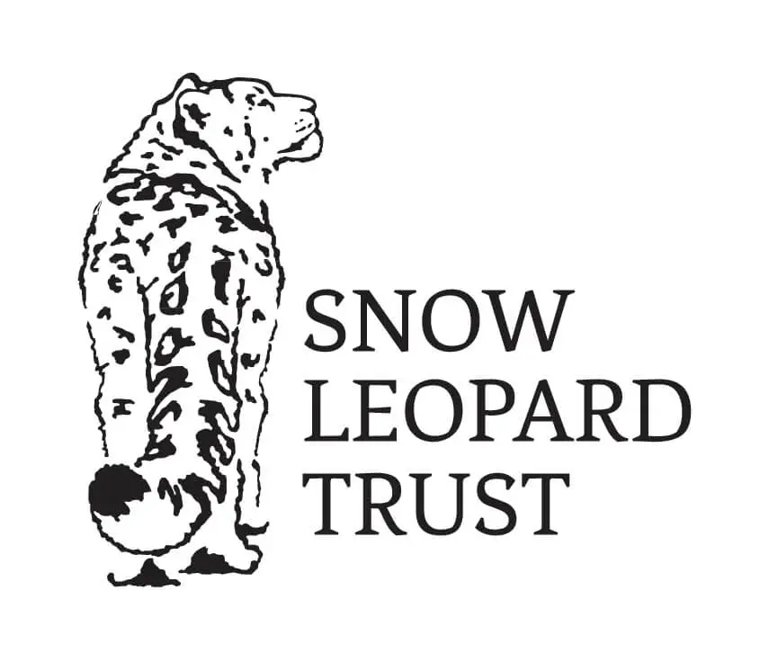
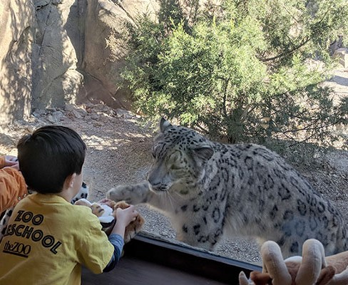
The most important step to take in order to protect important animals like the snow leopard is to raise awareness about them in your community. By understanding the problem, we can solve the issue.